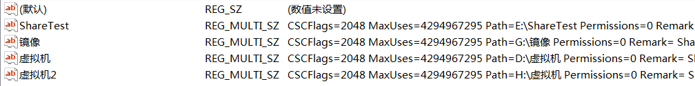

Windows 共享文件夹相关
最近由于项目需求，需要编写一个监控本机共享文件夹的变化的模块，经过查询资料，找到并实现了一个较为稳定的方式 项目实现是使用 Win32C++的，测试平台是 Win 7 64 和 Win 10 64，XP 测试也是好使的。下面是具体实现
首先要获取并监控系统共享文件夹的路径，相关注册表路径为 HKEY_LOCAL_MACHINE\System\CurrentControlSet\Services\LanmanServer\Share , 他的值的格式为如图所示：

0x01 C++ 获取共享文件夹目录
cpp
BOOL GetSharedFoldersList(map <CString, HANDLE> &theList)
{
BOOL bFlag = FALSE;
HKEY hKey = NULL;
do
{
//清空列表
theList.clear();
//HKEY_LOCAL_MACHINE\System\CurrentControlSet\Services\LanmanServer\Share
//通过注册表获取共享文件夹列表
HKEY rootKey = REG_SHARE_KEY;
CString szRegPath = REG_SHARE_PATH;
int ErrCode;
if (ERROR_SUCCESS != (ErrCode = RegOpenKeyEx(rootKey, szRegPath, 0, KEY_READ | KEY_WOW64_64KEY, &hKey)))
{
break;
}
TCHAR szValue [MAX_VALUE_NAME] = { 0 };
DWORD dwValueSize = MAX_VALUE_NAME;
int Index = 0;
DWORD dwBufferSize = 255;
DWORD dwType;
TCHAR *szValBuffer = NULL;
DWORD dwSize;
while (ERROR_NO_MORE_ITEMS != RegenumValue (
hKey, index, szValue, &dwValueSize, NULL, &dwType, NULL, &dwBufferSize))
{
//判断值类型
switch(dwType)
{
//只找多个串的值
case REG_MULTI_SZ:
{
dwSize = dwBufferSize + 1;
szValBuffer = new TCHAR [dwSize];
ZeroMemory(szValBuffer, dwSize);
if (ERROR_SUCCESS != RegQueryValueEx(hKey, szValue, 0, &dwType, (LPBYTE)szValBuffer, &dwBufferSize))
{
break;
}
int j = 0;
CString TmpValue;
for(int i = 0; szValBuffer [i] != '\0' ; i += j + 1)
{
for (j = 0; szValBuffer [i + j] != '\0'; j ++)
{
TmpValue += szValBuffer [i + j];
}
//如果找到共享路径，则直接放入容器，然后进行下一个路径的查找
if (TmpValue.Find(_T("Path =")) == 0)
{
//m_vSharedList.push_back(TmpValue.Right(TmpValue.GetLength() - 5));
CString Tmp = TmpValue.Right(TmpValue.GetLength() - 5);
CString szTmp = Tmp;
Tmp.MakeLower();
break;
}
TmpValue = _T("");
}
delete szValBuffer;
szValBuffer = NULL;
break;
}
//其他类型跳过
default:
{
break;
}
}
dwValueSize = MAX_VALUE_NAME;
dwBufferSize = 255;
index ++;
}
bFlag = TRUE;
}while(FALSE);
if (hKey != NULL)
{
RegCloseKey(hKey);
}
return bFlag;
}0x02 C++监控共享注册表变化
方式一 创建线程，调用 RegNotifyChangeKeyValue
cpp
//监控注册表项以更新共享文件夹列表
DWORD WINAPI SharedMonitor:: RefreshThread(LPVOID lpParam)
{
SharedMonitor *pThis = (SharedMonitor *)lpParam;
//只监控值的改变
DWORD dwFilter = REG_NOTIFY_CHANGE_LAST_SET;
HKEY hKey;
HKEY rootKey = REG_SHARE_KEY;
CString szRegPath = REG_SHARE_PATH;
//等待 10 分钟
int iWaitTime = 10 * 60 * 1000;
while (TRUE)
{
//监控注册表项改变
//Sleep(iWaitTime);
HANDLE hEvent;
BOOL bFlag = FALSE;
do
{
if (ERROR_SUCCESS != RegOpenKeyEx(rootKey, szRegPath, 0, KEY_ALL_ACCESS | KEY_WOW64_64KEY, &hKey))
{
MyDebugA ("RegMonitorThread--- RegOpenKeyEx ERR!");
break;
}
if (NULL == (hEvent = CreateEvent(NULL, TRUE, FALSE, NULL)))
{
MyDebugA ("CreateEvent ERR");
break;
}
if (ERROR_SUCCESS != RegNotifyChangeKeyValue (hKey, TRUE, dwFilter, hEvent, TRUE))
{
MyDebugA ("RegNotifyChangeKeyValue ERR");
break;
}
if (WAIT_FAILED == WaitForSingleObject (hEvent, INFINITE))
{
MyDebugA ("WaitForSingleObject ERR");
break;
}
bFlag = TRUE;
}while(FALSE);
RegCloseKey (hKey);
CloseHandle (hEvent);
//如果监控失败，则重新再来
if (! bFlag)
{
continue;
}
//等待系统将注册表消息发放完毕，否则有时候添加或删除的注册表项无法被枚举到
Sleep(200);
//进行共享列表枚举和比较
map <CString, HANDLE> theNewList;
//获取新列表
pThis-> GetSharedFoldersList(theNewList);
map <CString, HANDLE> &theOldList = pThis-> GetListInstance();
BOOL bFindNew = FALSE;
//比较两个列表
//添加旧列表中没有的共享
for (map <CString, HANDLE>:: iterator it = theNewList.begin();
it != theNewList.end(); ++it)
{
if (theOldList.find(it-> first) == theOldList.end())
{
MyDebug(_T("----------Find New Share----------"));
MyDebug(it-> first);
theOldList [it-> first] = 0;
bFindNew = TRUE;
}
}
//MyDebug(_T("---------Start Delete--------"));
//需要删除的列表, map 不支持循环删除多个元素
vector <CString> theDeleteList;
//删除旧列表中已经取消的共享
for (map <CString, HANDLE>:: iterator it = theOldList.begin();
it != theOldList.end(); ++it)
{
if (theNewList.find(it-> first) == theNewList.end())
{
//结束监控线程
if (! TerminateThread(it-> second, 0))
{
MyDebug(_T("TerminateThread ERR"));
MyDebug(it-> first);
}
//将线程占用的共享目录句柄释放
if (gs_mpDirHandleList [it-> first])
{
CloseHandle(gs_mpDirHandleList [it-> first]);
}
CloseHandle(it-> second);
theDeleteList.push_back(it-> first);
}
}
MyDebug(_T("-----------DeleteList-------------"));
//删除旧列表中的过期共享
for (vector <CString>:: iterator it = theDeleteList.begin();
it != theDeleteList.end(); ++it)
{
theOldList.erase(*it);
MyDebug(*it);
}
//如果有新的共享
if (bFindNew)
{
pThis-> SetSharedMonitor();
}
}
return 0;
}共享文件夹内文件监控
最后就是最终的目的，对共享文件夹内文件的变化进行监控操作。这里使用的是 WIN32 API ReadDirectoryChangesW ，这个的具体使用在我之前的一篇文章里有介绍，这里就不多说了，需要注意的一点是 ReadDirectoryChangesW 函数的第一个参数所需的句柄需要 CreateFile 去创建，而且创建后需要一直占用着不能释放，而创建时所需的权限(第三个参数) 必须设置为 FILE_SHARE_READ | FILE_SHARE_WRITE | FILE_SHARE_DELETE，因为如果少任意一个就有可能导致某些第三方软件的使用出现异常，例如迅雷下载，浏览器下载之类的。
cpp
//监控线程
DWORD WINAPI ATSharedMonitor:: MonitorThread(LPVOID lpParam)
{
CString szRootPath = *(CString *)lpParam;
HANDLE hRootHandle = CreateFile(
szRootPath, //监控路径
FILE_LIST_DIRECTORY,
FILE_SHARE_READ | FILE_SHARE_WRITE | FILE_SHARE_DELETE,
NULL,
OPEN_EXISTING,
FILE_FLAG_BACKUP_SEMANTICS/* | FILE_FLAG_OVERLAPPED*/,
NULL);
if(FAILED_HANDLE(hRootHandle))
{
MyDebug(_T("CreateFile Fail"));
return 0;
}
// 将目录句柄放到线程对应容器中
gs_mpDirHandleList [szRootPath] = hRootHandle;
// OUTPUT_PARAM_DEBUGA("The CurrentThread:%X", GetCurrentThread());
szRootPath += _T("\\");
wchar_t notify [1024];
ZeroMemory(notify, 1024);
DWORD dwBytes;
FILE_NOTIFY_INFORMATION *pNotify = (FILE_NOTIFY_INFORMATION *)notify;
//过滤同一个文件的操作
CString szLastFile = _T("");
while (TRUE)
{
if (ReadDirectoryChangesW (hRootHandle, ¬ify, sizeof(notify), TRUE,
FILE_NOTIFY_CHANGE_CREATION | FILE_NOTIFY_CHANGE_FILE_NAME |
FILE_NOTIFY_CHANGE_DIR_NAME | FILE_NOTIFY_CHANGE_LAST_WRITE,
&dwBytes, NULL, NULL))
{
MyDebug(_T("---------Change Happened!------------"));
pNotify-> FileName [pNotify-> FileNameLength / 2] = '\0';
//CString tmp = pNotify-> FileName;
//tmp.MakeLower ();
CString TmpPath = szRootPath + pNotify-> FileName;
switch(pNotify-> Action)
{
//重命名获取
case FILE_ACTION_RENAMED_OLD_NAME:
{
MyDebug (TEXT("文件更名 :") + TmpPath);
PFILE_NOTIFY_INFORMATION p = (PFILE_NOTIFY_INFORMATION)((char*)pNotify+pNotify-> NextEntryOffset);
p-> FileName [p-> FileNameLength/2] = '\0';
CString newName = szRootPath + p-> FileName;
MyDebug(newName);
break;
}
//删除
// case FILE_ACTION_REMOVED:
// {
// MyDebug (TEXT("文件删除 :") + TmpPath);
// }
//修改..略过文件夹的修改, 过滤同一个文件的修改
case FILE_ACTION_MODIFIED:
{
if (! PathIsDirectory(TmpPath) /*&& szLastFile.CompareNoCase(pNotify-> FileName) != 0*/)
{
//szLastFile = pNotify-> FileName;
MyDebug (TEXT("文件修改 :") + TmpPath);
}
break;
}
//新建文件获取
case FILE_ACTION_ADDED:
{
if (! PathIsDirectory(TmpPath) /*&& szLastFile.CompareNoCase(pNotify-> FileName) != 0*/)
{
MyDebug (TEXT("文件添加 :") + TmpPath);
}
break;
}
default:
{
break;
}
}
}
}
return 0;
}